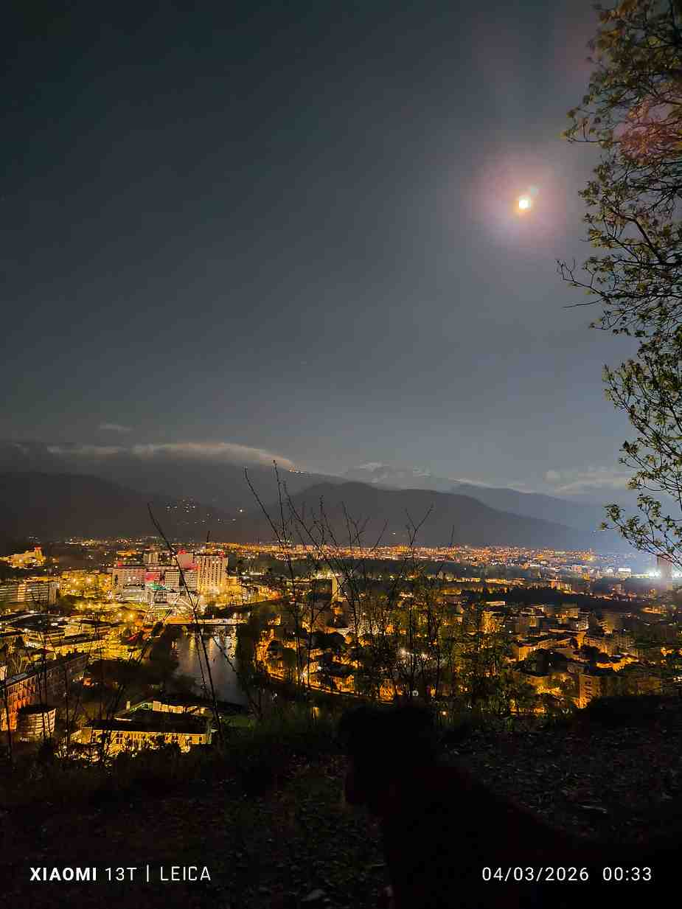
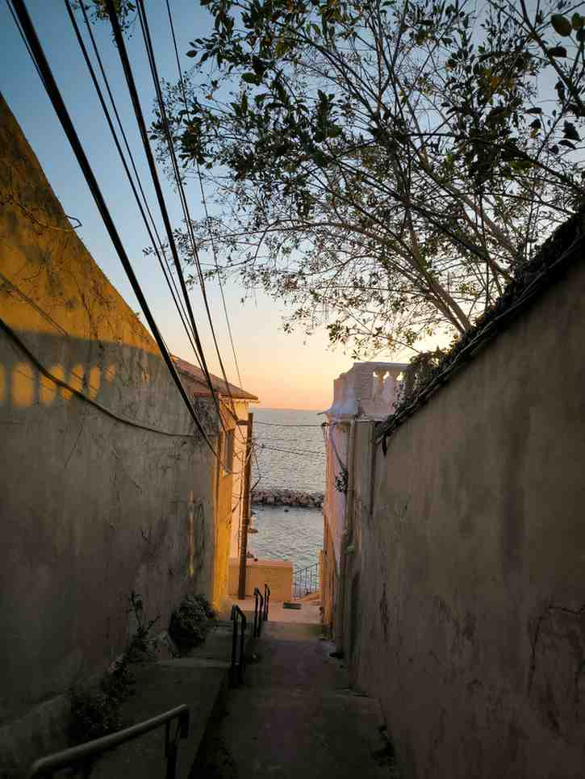

Quand je voyage ou quand je découvre un quartier, j'aime toujours prendre quelques photos. Cela me permet de garder une trace du lieu, mais aussi de me souvenir de l'ambiance précise du moment. J'aime particulièrement les fins de journée, parce que la lumière change vite et que les couleurs deviennent plus douces.
Dans cette page, j'ai choisi trois photos prises pendant mes sorties à Marseille. Elles montrent des ambiances différentes, mais elles ont toutes un lien avec ce que j'aime photographier : les escaliers, les passages étroits, la mer et les couchers de soleil.
Quelques photos que j'aime bien
Photo 1 : exploration des Vues Nocturnes
Lors d'une de mes promenades nocturnes sur les hauteurs, j'ai été émerveillé par cette vue imprenable sur Grenoble. J'aime particulièrement essayer les photos de nuit pour capturer l'ambiance si différente qu'elles offrent, même si la gestion de la lumière et la stabilité sont de vrais défis. Cette image, prise en pleine nuit, montre non seulement les lumières chaudes de la ville, mais aussi le relief impressionnant des montagnes environnantes qui veillent sur la vallée. C'est une composition exigeante, mais le résultat en vaut vraiment la peine

Grenoble la Nuit : Une symphonie de lumières urbaines sous la garde de la lune et des massifs alpins
Photo 2 : un escalier au bord de la mer
Dans cette photo, j'aime le contraste entre l'ombre de l'escalier et la lumière au fond. On voit encore la mer, mais d'une autre manière. Ce genre de scène me plaît parce qu'il y a à la fois une impression de promenade et un côté un peu cinématographique.

Escalier dans Marseille avec la mer visible au fond.
Photo 3 : un coucher de soleil sur la mer
J'aime beaucoup cette photo parce qu'elle est plus ouverte que les deux précédentes. On voit directement la mer et le soleil qui se reflète sur l'eau. C'est une image simple, mais elle représente très bien ce que j'aime retrouver dans la photographie : une belle lumière, une ambiance tranquille et un souvenir précis.